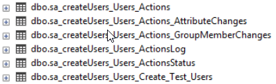

Summary: Source table data requirements for action modules
Issue: The source table has specific requirements prior to running successfully:
When using action modules in StealthAUDIT, assume the action module will run against the entire source table.
Always filter the rows you want to execute against into a new table before targeting.
Do not rely on the scoping mechanism in the action properties page (filtering on the source table in the window pane).
Instructions: Configuration
File System
Registry
This requirement comes from columns that would be generated by a StealthAUDIT data collection (native data table).
Host
Name of the target server
SA_HOST
This column determines which StealthAUDIT server the data belongs to, if there are multiple SA consoles connected to a single database. We usually don't recommend that, but the functionality exists.
JobRunTimeKey
Contains the date and time when a the job was run. If history is turned on, this allows StealthAUDIT to identify data collected during a specific collection execution.
rowGUID
This is a GUID used to identify each data row as unique. The datatype in the table is uniqueidentifier (GUID).
RowKey
This is also used to identify each data row as unique. Sometimes the value is a GUID, but the datatype in the table is a varchar (text string).
The table definition for the required columns is:
[SA_HOST] [varchar](64) NOT NULL,
[JobRunTimeKey] [smalldatetime] NULL,
[rowGUID] [uniqueidentifier] NOT NULL,
[ROWKEY] [varchar](1024) NULL
You can use this as a template to add any of the missing columns to a SQL script
,'sbnjeng30' as [SA_HOST] --This should be the name of the SA Server
,cast(GETDATE() as smalldatetime) as [JobRunTimeKey]
,NEWID() as [rowGUID]
,NEWID() as [RowKey]
Source Table Example:
Results
After running an action, several tables are created based on the name of your source table.
Two tables will appear in the results node of your job
Contains individual results for each item acted upon during an action execution.
(This is the contents of the ActionStatus table. See below for details.)
Contains the current source table data joined to the operation and result summary data in the "_Actions_" (see below for details.
If your source table no longer contains the matching source data, the results will not show in this view.
SQL Tables
My source table (above) is named SA_CreateUsers_Users

This table identifies any action that's been run in a job
Contains execution time, who ran the action, and overall result of each action execution for any action taken against the source table.
Contains individual results for each item acted upon during an action execution.
Specific to the AD Action Module, this will house any attribute changes that were made as part of an action
This table's srcRowGUID column references objects in the ActionStatus table's srcRowGUID column.
_Actions_GroupMemberChanges
Specific to the AD Action Module, this will house any attribute changes that were made as part of an action
_Actions_
Contains distinguished name of Object that was acted upon, as well as a verbose description of the action taken.
This table's joinRowGUID column references objects in the ActionStatus table's srcRowGUID column.
Deleting Objects with AD Actions
- Prompt you to enter the password for the account being used to delete objects
- Ask you to type the word "Delete" as a confirmation
Roll Back
To use rollback, you have to set the action module to rollback instead of the currently configured action.
Unfortunately, saving the action to a rollback setting effectively clears the previously configured action.
To alleviate the difficult this creates, you can back up the ActionsTasks.xml from the job directory, and put it back after using the roll back feature.
Product: StealthAUDIT
Module: SA - Action Module - Active Directory;SA - Action Module - File;SA - Action Module - Mailbox;SA - Action Module - PublicFolder;SA - Action Module - Registry;SA - Action Module - SendMail;SA - Action Module - ServiceNow;SA - Action Module - Survey
Legacy Article ID: 1464